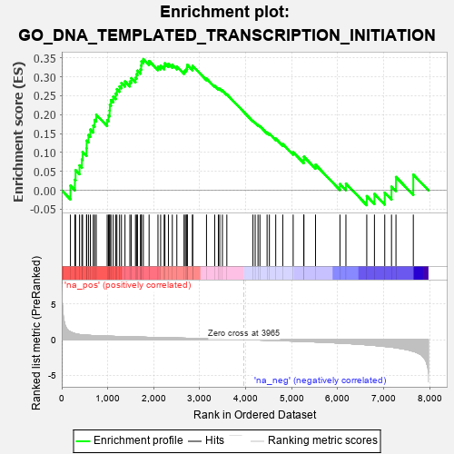
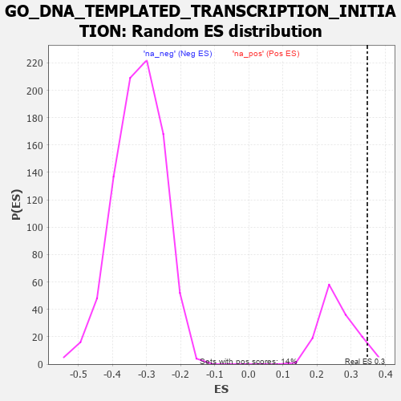

| | | Dataset | 7d |
| Phenotype | NoPhenotypeAvailable |
| Upregulated in class | na_pos |
| GeneSet | GO_DNA_TEMPLATED_TRANSCRIPTION_INITIATION |
| Enrichment Score (ES) | 0.34702334 |
| Normalized Enrichment Score (NES) | 1.3316282 |
| Nominal p-value | 0.0647482 |
| FDR q-value | 0.38990012 |
| FWER p-Value | 1.0 |
Table: GSEA Results Summary

Fig 1: Enrichment plot: GO_DNA_TEMPLATED_TRANSCRIPTION_INITIATION
Profile of the Running ES Score & Positions of GeneSet Members on the Rank Ordered List
| PROBE | GENE SYMBOL | GENE_TITLE | RANK IN GENE LIST | RANK METRIC SCORE | RUNNING ES | CORE ENRICHMENT | | 1 | RORB | | | 189 | 1.097 | 0.0123 | Yes |
| 2 | TEAD4 | | | 286 | 0.846 | 0.0281 | Yes |
| 3 | CCNH | | | 301 | 0.817 | 0.0533 | Yes |
| 4 | BAX | | | 387 | 0.711 | 0.0660 | Yes |
| 5 | RRN3 | | | 438 | 0.667 | 0.0817 | Yes |
| 6 | ERCC1 | | | 453 | 0.660 | 0.1017 | Yes |
| 7 | NR1I3 | | | 539 | 0.615 | 0.1113 | Yes |
| 8 | SRF | | | 542 | 0.615 | 0.1313 | Yes |
| 9 | CCNB1 | | | 581 | 0.601 | 0.1463 | Yes |
| 10 | TAF8 | | | 622 | 0.587 | 0.1606 | Yes |
| 11 | CDK7 | | | 686 | 0.564 | 0.1713 | Yes |
| 12 | MED20 | | | 714 | 0.555 | 0.1862 | Yes |
| 13 | MED6 | | | 750 | 0.545 | 0.1998 | Yes |
| 14 | TAF3 | | | 988 | 0.486 | 0.1858 | Yes |
| 15 | MED31 | | | 1017 | 0.480 | 0.1981 | Yes |
| 16 | YAP1 | | | 1041 | 0.475 | 0.2109 | Yes |
| 17 | TAF9 | | | 1046 | 0.475 | 0.2261 | Yes |
| 18 | XPA | | | 1070 | 0.469 | 0.2387 | Yes |
| 19 | MED4 | | | 1119 | 0.460 | 0.2478 | Yes |
| 20 | ERCC3 | | | 1173 | 0.451 | 0.2559 | Yes |
| 21 | MED17 | | | 1199 | 0.447 | 0.2675 | Yes |
| 22 | MED8 | | | 1257 | 0.437 | 0.2748 | Yes |
| 23 | TEAD1 | | | 1298 | 0.428 | 0.2838 | Yes |
| 24 | TAF2 | | | 1375 | 0.415 | 0.2879 | Yes |
| 25 | TAF15 | | | 1481 | 0.393 | 0.2876 | Yes |
| 26 | TAF6 | | | 1512 | 0.389 | 0.2966 | Yes |
| 27 | CCNC | | | 1603 | 0.373 | 0.2976 | Yes |
| 28 | CDK4 | | | 1626 | 0.370 | 0.3070 | Yes |
| 29 | RXRA | | | 1647 | 0.365 | 0.3165 | Yes |
| 30 | ERCC2 | | | 1712 | 0.354 | 0.3201 | Yes |
| 31 | MED14 | | | 1727 | 0.350 | 0.3299 | Yes |
| 32 | MED23 | | | 1733 | 0.350 | 0.3408 | Yes |
| 33 | MED10 | | | 1774 | 0.341 | 0.3470 | Yes |
| 34 | TAF4 | | | 1899 | 0.321 | 0.3419 | No |
| 35 | TAF7 | | | 2092 | 0.292 | 0.3272 | No |
| 36 | TBPL2 | | | 2150 | 0.285 | 0.3294 | No |
| 37 | BAZ2A | | | 2227 | 0.272 | 0.3287 | No |
| 38 | CREB1 | | | 2243 | 0.269 | 0.3357 | No |
| 39 | MED25 | | | 2320 | 0.257 | 0.3346 | No |
| 40 | TAF1B | | | 2404 | 0.245 | 0.3322 | No |
| 41 | KAT2B | | | 2502 | 0.226 | 0.3274 | No |
| 42 | MITF | | | 2659 | 0.205 | 0.3144 | No |
| 43 | TAF12 | | | 2686 | 0.201 | 0.3177 | No |
| 44 | MED7 | | | 2709 | 0.198 | 0.3215 | No |
| 45 | MED26 | | | 2726 | 0.194 | 0.3259 | No |
| 46 | RORA | | | 2730 | 0.193 | 0.3319 | No |
| 47 | NR2E1 | | | 2844 | 0.177 | 0.3234 | No |
| 48 | CAND1 | | | 2845 | 0.177 | 0.3292 | No |
| 49 | TAF11 | | | 3147 | 0.130 | 0.2954 | No |
| 50 | TAF13 | | | 3325 | 0.100 | 0.2763 | No |
| 51 | MED1 | | | 3405 | 0.089 | 0.2692 | No |
| 52 | RXRG | | | 3435 | 0.085 | 0.2684 | No |
| 53 | TBP | | | 3493 | 0.078 | 0.2638 | No |
| 54 | MAPK3 | | | 3589 | 0.062 | 0.2538 | No |
| 55 | HNF4A | | | 4157 | -0.034 | 0.1831 | No |
| 56 | TAF7L | | | 4205 | -0.042 | 0.1786 | No |
| 57 | RSF1 | | | 4267 | -0.053 | 0.1726 | No |
| 58 | CDK8 | | | 4308 | -0.061 | 0.1695 | No |
| 59 | ERCC6 | | | 4464 | -0.087 | 0.1528 | No |
| 60 | SNW1 | | | 4514 | -0.096 | 0.1498 | No |
| 61 | TAF10 | | | 4652 | -0.128 | 0.1366 | No |
| 62 | PPM1D | | | 4805 | -0.158 | 0.1226 | No |
| 63 | TAF5 | | | 5031 | -0.204 | 0.1009 | No |
| 64 | PTEN | | | 5262 | -0.261 | 0.0804 | No |
| 65 | CDK1 | | | 5264 | -0.262 | 0.0889 | No |
| 66 | VDR | | | 5517 | -0.325 | 0.0677 | No |
| 67 | NR2E3 | | | 6048 | -0.488 | 0.0167 | No |
| 68 | THRB | | | 6178 | -0.531 | 0.0179 | No |
| 69 | WWTR1 | | | 6631 | -0.729 | -0.0153 | No |
| 70 | TBPL1 | | | 6798 | -0.814 | -0.0094 | No |
| 71 | NR4A1 | | | 7022 | -0.951 | -0.0063 | No |
| 72 | AR | | | 7169 | -1.046 | 0.0098 | No |
| 73 | CDK9 | | | 7266 | -1.138 | 0.0352 | No |
| 74 | TAF1 | | | 7643 | -1.633 | 0.0415 | No |
Table: GSEA details [plain text format]

Fig 2: GO_DNA_TEMPLATED_TRANSCRIPTION_INITIATION: Random ES distribution
Gene set null distribution of ES for GO_DNA_TEMPLATED_TRANSCRIPTION_INITIATION